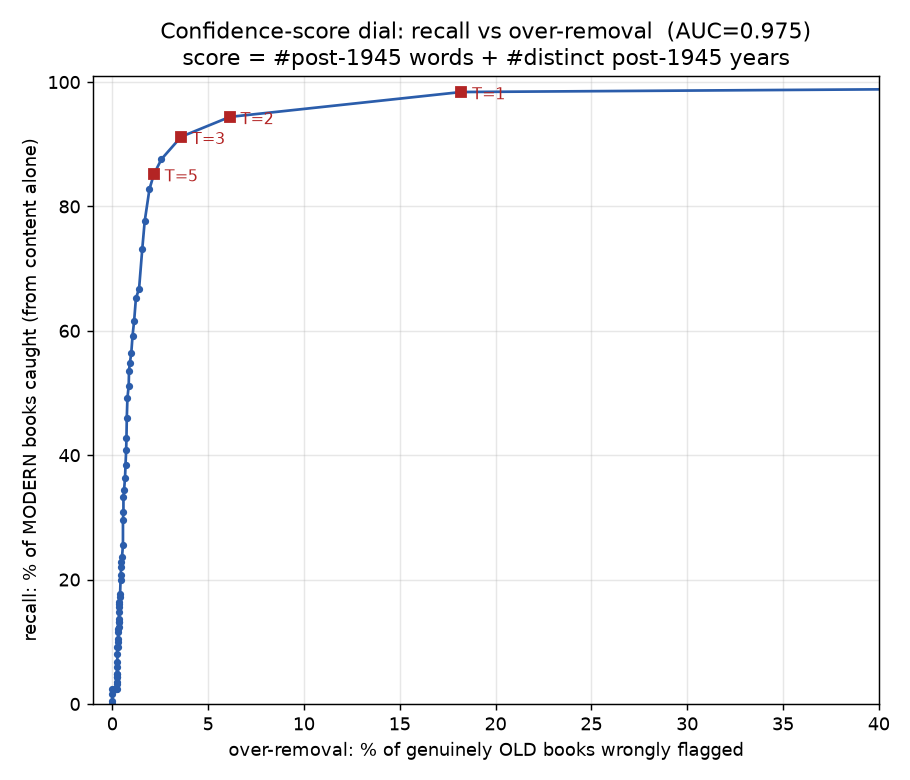
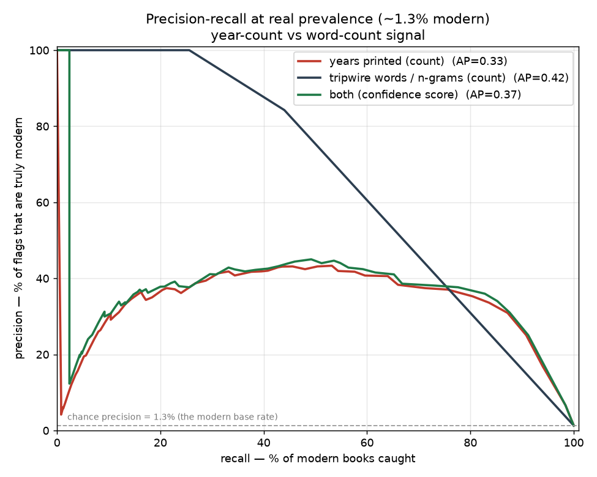
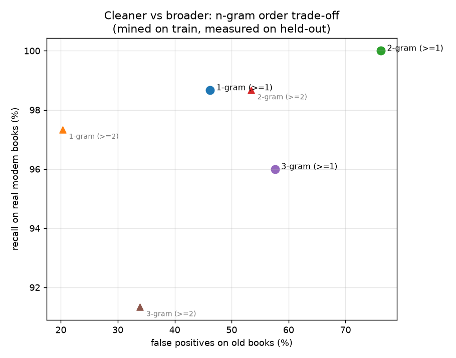

A running log of how the filter evolved over one day — including the three places we were wrong and had to turn around. The honest version, course-corrections and all.
The job: a library of 140,000 books that is supposed to be entirely old (pre-1929), but a few newer books have slipped in. We can't read them all, so we want an automatic filter that flags the modern intruders. Here is the path we actually took.
Some words are giveaways: nobody wrote "Cold War," "transistor," or "internet" before 1945. So we built a list of such words — and rather than guessing, we measured each one against Google Books Ngrams (which says how common a word was each year). The measurement even corrected our own guesses: "penicillin," "television," "chemotherapy," and "united nations" all turned out to appear in genuinely old books, so we dropped them. We kept 128 validated words and searched for all of them in one fast pass (an algorithm called Aho-Corasick).
We first said "8× faster than the old method, whole library in ~11 minutes." On a real 28,000-book run that fell apart: the 8× is only the word-matching step. The pipeline also has to clean every page first (fix OCR hyphenation, strip scanner stamps), and that cleaning is the real cost.
On 3,000 books we saw no false alarms and reported perfect precision. On 28,000 books the truth showed up. Here is the scorecard (using each book's own date label as the answer key):
| scanner FLAGGED | scanner clean | |
|---|---|---|
| actually MODERN (≥1946) | caught: 154 | missed: 204 |
| actually OLD (≤1945) | false alarm: 85 | correct: 27,557 |
Look again at the scorecard: we missed 204 of 358 modern books — a recall of just 43%. Reading the misses explained it: they were modern but dull — "Specimens of type faces" (1951), "Nursing services in small manufacturing plants" (1952), "Sketches of South Georgia folklife" (1977). Real modern books, but they use no flashy modern words. No word-list can catch a book that contains none of the words. Vocabulary had hit a ceiling.
The fix wasn't more words. A book written before 1945 cannot print "© 1987" in its text. Modern books are full of recent years (copyright lines, references); the median modern book in our sample printed 15 distinct post-1945 years. So we count those. This signal is completely separate from vocabulary, and it catches almost everything vocabulary missed.
That gives a tunable confidence score = (number of giveaway words) + (number of distinct post-1945 years), with a dial you turn for your tolerance:

| threshold | recall (modern caught) | over-removal (old wrongly flagged) |
|---|---|---|
| ≥1 | 98% | 18% |
| ≥2 | 94% | 6% |
| ≥3 | 91% | 4% |
The year detector is one line of code: find any 4-digit number between 1946 and 2029 and count the distinct ones. It runs instantly. But it matches recent-looking numbers, not dates — a page number or a catalogue code can trip it. And many old scans carry a modern preservation stamp ("treatment date: august 2005…") that prints a 2005 onto the page. So the raw signal needs cleaning. Measured on real books:
| year signal | modern caught (≥1 / ≥2 years) | old wrongly flagged (≥1 / ≥2) |
|---|---|---|
| raw | 99% / 96% | 32% / 7.4% |
| + preservation stamp stripped | 99% / 95% | 16% / 5.1% |
| + only date-looking years | 94% / 88% | 7.5% / 2.2% |
| + only in the front 20% of the book | 75% / 63% | 1.9% / 0.5% |
Each step trades catch-rate for fewer false alarms. Stripping the preservation stamp is free — it halves the false alarms (32% → 16%) with no loss of catch-rate — so it is always on. Requiring a real date context, or only looking in the front matter where a copyright year sits, cleans up further but costs catch-rate. We keep stamp-stripping as the default and leave the tighter options (date-context, front-of-book) as switches.
Earlier the precision-recall curves looked too good — because the test sample was balanced, hiding the imbalance. Redrawn at the real prevalence (only 1.3% of books are modern), the two signals are revealed as complementary opposites:

Could we lift the word ceiling by automatically mining thousands of giveaway phrases, and would longer phrases (trigrams) be cleaner than two-word ones? We tested it: mine candidate 1-, 2-, and 3-word phrases that are common in modern books and absent from a training set of old books, then check them on held-out books.

For a corpus where letting a modern book through is the cardinal sin, the practical filter is a combination, with a dial:
The crucial partner is the date label itself: it catches every correctly-dated modern book for free, so the noisy content signals only have to catch the rare mislabelled ones. The two together get you close to "no modern books survive."
Three things we cannot wish away, all flowing from the 1-in-77 imbalance:
• High recall costs you old books. To miss almost no modern book, you must flag a meaningful slice of innocent old ones. The dial sets the price; there is no setting that is both complete and clean from content alone.
• Some modern books are invisible. A book that is mislabelled old, uses no modern word, and prints no modern year (~1% of modern books print zero years) cannot be caught by reading the text.
• These are samples, not the last word. Numbers come from runs of a few hundred to ~28,000 books and would shift a little on another draw. The shape — words precise/narrow, years broad/noisy, validation beats mining — is stable.
storytracer/LoC-PD-Books (140,000 public-domain books), Google Books Ngrams, and Wikipedia. Figures: confidence_score.png, pr_curves.png, ngram_order.png. Code and data in this repository. A working log, not a final verdict.